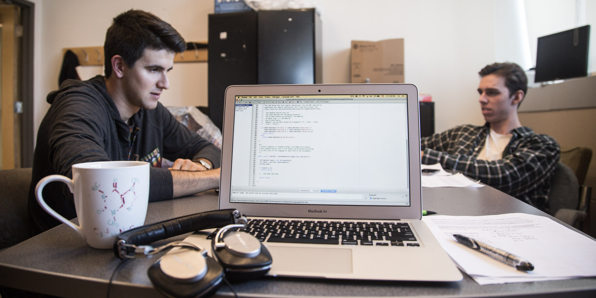

Programs of study

Our programs
Welcome to physiology! In our department, three programs[?] of study are offered: Major, Honours and Liberal. These three programs are similar in most of the curriculum, but differ at key points, making them unique. In addition, the Department also offers two joint majors with the departments of Physics and Mathematics, as well as an interdepartmental honours program in immunology. We will attempt to guide you through your choice of program.
Major
The Major program is the curriculum that presents to students a deep understanding of human and mammalian physiology in all of its aspects. In addition to the intensive study of physiology, a strong background in the related life and biomedical sciences is founded. Fields such as biochemistry, molecular biology, neuroscience and immunology are explored.
The Major program is 65 credits in weight, and thus allows the pursuit of a minor or elective courses outside of physiology.
This program of study best suits students who wish to pursue intensive studies in physiology while having the option to take courses in other areas of their interest.
Honours
The Honours program is the curriculum axed on experimental research. In addition to learning a strong theoretical background, students have the opportunity to interact with leading experts in the field of physiology while conducting guided experimental research in a laboratory setting. Courses and seminars are also offered in scientific methodology and communication, presenting students a complete preparation for a career in scientific research.
The Honours program is 75 credits in weight, leaving little room for electives or a minor. Admission into the Honours program is limited, and selection is made before entering U2. Students interested in the Honours program should have a strong academic standing in U1 and are advised to speak to the departmental advisor.
This program of study best suits students who wish to pursue a career in scientific research in the field of physiology.
The following table summarizes some of the core Honours Physiology courses.
| Course | Pros | Cons | Evaluation |
|---|---|---|---|
| PHGY 351: Research in Physiology Syllabus |
|
|
|
| PHGY 359: Tutorial in Physiology Syllabus |
|
|
|
| PHGY 459: Physiology Seminar Fall Winter |
|
|
|
| PHGY 461: Experimental Physiology Syllabus: N/A More |
|
|
|
Liberal
The Liberal program allows maximum flexibility to students. Students are required to take core physiology courses, but have a reduced number of required courses outside of the Department. This allows students to explore the other sciences in their undergraduate degree while also maintaining an in-depth study of core physiological concepts.
The Liberal program is 46-50 credits in weight, and students are required to take a minor in another discipline.
This program of study best suits students who wish to pursue studies in physiology in conjunction with other fields of science.
Joint Majors Physiology-Mathematics and Physiology-Physics
The Department of Physiology offers two joint major programs with the departments of Mathematics and Physics. These joint major programs are aimed at students who wish to pursue a degree in physiology with strong physical and mathematical foundation. Subjects emphasized will be electrophysiology, biometry, mathematical modeling, and more. The joint major programs contain all core physiology courses, but a lower number life science courses outside of physiology. The aim is to complement a core physiological foundation with theoretical and applied principles in physics or mathematics. Culminating in a year-long research project, these programs also provide a strong foundation for graduate studies in experimental physiology.
The Joint Major programs are 77 credits in weight, leaving little room for electives or a minor. Students interested in pursuing a joint major should speak with their departmental advisor prior to or at the start of the U1 year.
This program of study best suits students who wish to pursue studies in physiology with a high degree of specialization in mathematics and physics.
The following table summarizes some of the core MATH and PHYS courses in the Joint Majors program.
| Course | Pros | Cons | Evaluation |
|---|---|---|---|
| BIOL 309: Biometry Syllabus: TBD More |
|
|
|
| BMDE 519: Biomedical Signals & Systems Syllabus: TBD |
|
|
|
| MATH 326: Non-linear Dynamics & Chaos Syllabus: TBD |
|
|
|
| MATH 437: Mathematical Methods in Biology Syllabus: TBD |
|
|
|
| PHYS 519: Advanced Biophysics Syllabus: TBD |
|
|
|
Interdepartmental Honours in Immunology
The Interdepartmental Honours in Immunology (IHI) is a demanding and highly structured joint program between the departments of Physiology, Biochemistry, and Microbiology and Immunology aimed to give students a complete training in the field of immunology. Along with a core training in physiology, molecular biology, and biochemistry, students are exposed to research techniques and seminars, allowing them to be immersed in academic research in their undergraduate years. Culminating in a year-long research project, the IHI provides a solid preparation for graduate studies in immunology as well as related life sciences.
The IHI is 77 credits in weight, leaving little room for electives or a minor. Students interested in pursuing the IHI should speak with their departmental advisor prior to or at the start of the U1 year.
This program of study best suits students who wish to pursue a career in scientific research in immunology and its related fields.